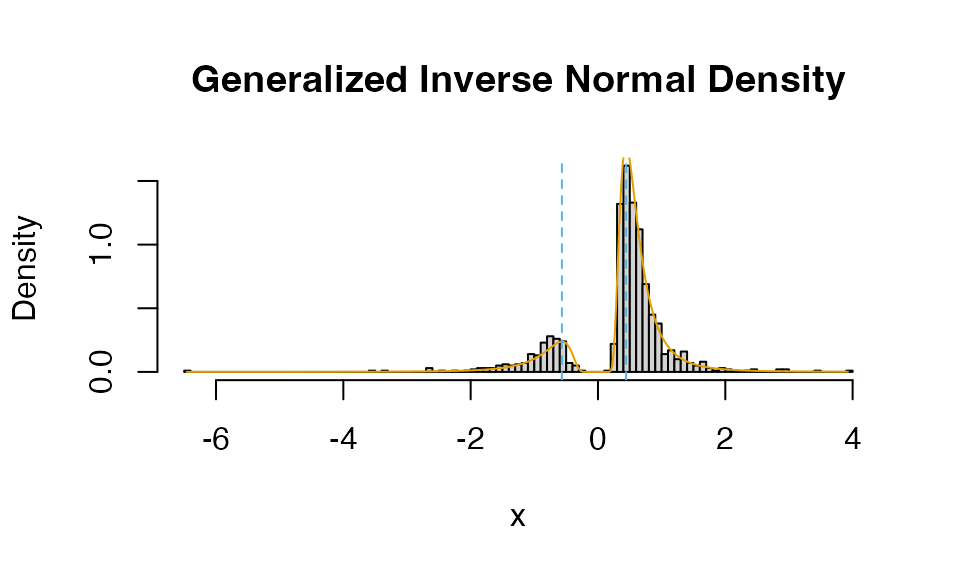

This document introduces the main functions in the nisone R package. The most important of which are:
-
ci1(): Frequentist \(n=1\) confidence intervals. -
wc_width(): The half-width (in units of \(|X-A|\)) for the \(n=1\) confidence intervals. -
aug_t(): Augmented \(t\)-interval, the generalization ofci1()for \(n\geq 2\). -
bci1(): Bayesian version ofci1(). -
blevel(): The true confidence level of the credible interval frombci1(). -
bcin(): Bayesian interval for \(n\geq 2\) assuming the coefficient of variation is known. -
bft(): Bayes factor given a \(t\)-statistic. -
dn1post(),pn1post(),qn1post(),rn1post(),nun1post(): The marginal posterior distribution of the location parameter using the \(n=1\) priors. -
dinvnorm(),pinvnorm(),qinvnorm(),rinvnorm(): The inverse normal distribution. -
dginvnorm(),pginvnorm(),qginvnorm(),rginvnorm(): The generalized inverse normal distribution.
These methods are all described in detail in Gerard (2026).
\(n=1\) Confidence Intervals
Suppose we have a single observations from a symmetric location-scale family. That is, \(\rho()\) is any symmetric density function and the PDF of \(X\) is \(\frac{1}{\sigma}\rho\left(\frac{X-\mu}{\sigma}\right)\) for some center \(\mu\) and some scale \(\sigma\). For example, \(X \sim N(\mu, \sigma^2)\). Given a prespecified value \(A\), valid confidence intervals of the form \[ X \pm \eta |X - A| \] and \[ \frac{X + A}{2} \pm \eta |X - A| \] can be constructed to produce valid \((1 - \alpha)100\%\) confidence intervals. This is done by making \(\eta\) large enough to bound the coverage probability below by \((1 - \alpha)\). See Blachman and Machol (1987).
The function ci1() produces these confidence intervals
where \(\rho()\) is the density of the
(i) standard normal, (ii) Cauchy, and (iii) uniform. Surprisingly,
constructing intervals using a uniform distribution makes them valid
\((1 - \alpha)100\%\) confidence
intervals when \(X\) has any
unimodal density.
Suppose we observe \(X = 2\) and we use \(A = 1\), then, centered at \(X\), the various 95% intervals are:
ci1(x = 2, A = 1, type = "x", family = "cauchy")
#> x center lower upper
#> [1,] 2 2 -4.392453 8.392453
ci1(x = 2, A = 1, type = "x", family = "normal")
#> x center lower upper
#> [1,] 2 2 -7.67885 11.67885
ci1(x = 2, A = 1, type = "x", family = "uniform")
#> x center lower upper
#> [1,] 2 2 -17 21Centered at \((X + A) / 2\), they are
ci1(x = 2, A = 1, type = "ave", family = "cauchy")
#> x center lower upper
#> [1,] 2 1.5 -4.853102 7.853102
ci1(x = 2, A = 1, type = "ave", family = "normal")
#> x center lower upper
#> [1,] 2 1.5 -8.152953 11.15295
ci1(x = 2, A = 1, type = "ave", family = "uniform")
#> x center lower upper
#> [1,] 2 1.5 -17.48683 20.48683If you are interested, you can get the values of \(\eta\) for the normal, Cauchy, and uniform
via wc_width(). E.g., for a normal distribution 95%
confidence interval of the form \((X + A)/2
\pm \eta|X-A|\), the value of \(\eta\) is
wc_width(alpha = 0.05, center = "ave", family = "normal")
#> [1] 9.652953\(n=1\) Bayesian Intervals
In Gerard (2026), we showed that (for \(n=1\)) using the following prior produces posterior credible intervals that are asymptotically valid confidence intervals. \[ \pi(\mu,\nu) = |\mu - A|^{-1}\delta_{\nu^*}(\nu), \text{ where}\\ \nu = (\mu - A) / \sigma,\\ \nu^* = \mathrm{argmax}_{\nu>0}\nu\rho\left(\nu\right), \] and \(\delta_{\nu^*}(\nu)\) is a pointmass at \(\nu^*\). This is asymptotic not in the sample size, but in the confidence level. So the credible intervals are approximate confidence intervals for small \(\alpha\), which is the typical case.
In the normal case, this corresponds to the prior \[
\pi(\mu) = |\mu - A|^{-1} \text{ and }
\sigma^2 = (\mu - A)^2 \text{ w.p. 1}.
\] The resulting posterior distribution is inverse normal (see
below). We have implemented this Bayesian approach in
bci1(). Though, the asymptotics are so good that you end up
getting almost the exact same interval as the frequentist \(n=1\) interval,
bci1(x = 1, A = 0)
#> x med lower upper
#> [1,] 1 0.7098261 -9.151018 10.15462
ci1(x = 1, A = 0)
#> x center lower upper
#> [1,] 1 0.5 -9.152953 10.15295The true level of the Bayesian credible intervals can be found by
blevel(). It’s almost exactly the correct level for 95%
confidence intervals. But they can dip a little further below the
nominal level for smaller levels:
blevel(level = 0.7, nu = 0.8)
#> [1] 0.683776\(n \geq 1\) Augmented t-intervals
Suppose we have data \(X_1,\ldots,X_n \sim
N(\mu, \sigma^2)\). Let \(A\) be
some prespecified value. Let \(\hat{\mu}\) and \(\hat{\sigma}^2\) be the sample mean and
sample variance using the augmented data (all the \(X\)’s and \(A\)). We consider intervals of the form
\[
\hat{\mu} \pm \eta \hat{\sigma}/\sqrt{n + 1},
\] where \(\eta\) is chosen to
control the error probability. We call these “augmented \(t\)-interval”. The function that calculates
them is aug_t().
If \(A\) is close to \(\mu\), the augmented \(t\)-intervals tend to be smaller than the Student \(t\)-intervals on average. For \(n=2\), you only need \(A\) to be within about 4 standard deviations of \(\mu\) to see large improvements.
n <- 2
mu <- 10
sigma <- 4
A <- 5
x <- rnorm(n = n, mean = mu, sd = sigma)
aug_t(x = x, A = A)
#> [1] -1.877004 17.362843
t.test(x)$conf.int
#> [1] -11.47214 29.70090
#> attr(,"conf.level")
#> [1] 0.95An augmented \(t\)-interval can be
viewed as an inverted frequentist test that uses a Bayes factor as a
frequentest test statistic. Gronau and Wagenmakers (2020) studied the
connection between Bayes factors and t-statistics. Let \(\delta\) be the standardized effect size,
let \(\sigma^2\) be the variance
(assumed equal in two-sample case). In the one-sample case, \(\delta = \frac{\mu - \mu_0}{\sigma}\),
where \(\mu_0\) is the null value. In
the two-sample case, \(\delta = \frac{\mu_1 -
\mu_2}{\sigma}\), where \(\mu_1\) and \(\mu_2\) are the means of the two-samples.
We place the prior \(1/\sigma^2\) under
the null and \(\pi(\delta)/\sigma^2\)
under the alternative, for some prior density \(\pi(\cdot)\). Given this setting, the Bayes
factor is a function of the \(t\)-statistic. \[
\mathrm{BF} =
\frac{\int_{\delta}T_{\nu}(t|\sqrt{n_\delta}\delta)\pi(\delta)\mathrm{d}\delta}{T_{\nu}(t)},
\] where \(T_{\nu}()\) is the
central \(t\)-density with \(\nu\) degrees of freedom, and \(T_{\nu}(|a)\) is the non-central \(t\)-density with \(\nu\) degrees of freedom and non-centrality
parameter \(a\). In the one-sample
case, \(n_{\delta} = n\) and \(\nu = n - 1\), and in the two-sample case
\(n_{\delta} = \left(\frac{1}{n_1} +
\frac{1}{n_2}\right)^{-1}\) and \(\nu =
n_1 + n_2 - 2\). The bft() function will calculate
this Bayes factor given a \(t\)-statistic and any prior distribution
(absolutely continuous with respect to Lebesgue measure) you provide
over \(\delta\) (with Cauchy as a
default).
tstat <- mean(x) / (sd(x) / length(x))
bft(t = tstat, nu = length(x) - 1, nd = length(x))
#> [1] 2.289464To get the Bayes factor using augmented data, you assume that \(\mu\) has a normal prior with mean \(A\) and variance \(\sigma^2\), then you just include \(A\) in calculating the augmented \(t\)-statistic
Generalized Inverse Normal Distribution
Robert (1991) considered the generalized inverse normal distribution of the form \[ f(x|\alpha,\mu,\tau) = K(\alpha,\mu,\tau)|x|^{-\alpha}\exp\left\{-\frac{1}{2\tau^2}\left(\frac{1}{x}-\mu\right)^2\right\}, \] where \(K(\alpha,\mu,\tau)\) is the proportionality constant. When \(\alpha = 2\), this corresponds to the inverse normal distribution (different from the inverse Gaussian distribution), where \(\frac{1}{X} \sim N(\mu, \tau^2)\). The generalized inverse normal distribution shows up in Bayesian analysis when you parameterize the normal distribution in terms of its mean \(\mu\) and its coefficient of variation \(\nu = \mu / \tau\).
The nisone() R package contains density, distribution,
quantile, and random generation functions for the (generalized) inverse
normal distribution. You can use this to get the full posterior
distribution for \(n=1\) intervals when
\(\rho()\) is normal. In the normal
case, the marginal posterior of \(\mu -
A\) is inverse normal with inverse mean \(\frac{1}{X - A}\) and inverse variance
\(\frac{1}{(X - A)^2}\). E.g., if we
observed \(X = 2\) and use \(A = 0.75\), the full posterior density
is
museq <- seq(-2, 5, length.out = 500)
X <- 2
A <- 0.75
density <- dinvnorm(x = museq - A, imean = 1 / (X - A), isd = 1 / abs(X - A))
graphics::plot(
museq,
density,
type = "l",
xlab = expression(mu),
ylab = "Posterior Density"
)You can get 95% Credible intervals via
qinvnorm(p = c(0.025, 0.975), imean = 1 / (X - A), isd = 1 / abs(X - A)) + A
#> [1] -10.68877 13.44327Which agree with bci1()
bci1(x = X, A = A)
#> x med lower upper
#> [1,] 2 1.637283 -10.68877 13.44327Interfacing with the posterior is provided by the n1post
functions so that you don’t need to manually calculate the posterior
above.
dn1post(x = 10, obs = X, A = A, nu = 1, fam = "normal")
#> [1] 0.004009705
dinvnorm(x = 10 - A, imean = 1 / (X - A), isd = 1 / abs(X - A))
#> [1] 0.004009705
qn1post(p = c(0.025, 0.975), A = A, obs = X, nu = 1, fam = "normal")
#> [1] -10.68877 13.44327
qinvnorm(p = c(0.025, 0.975), imean = 1 / (X - A), isd = 1 / abs(X - A)) + A
#> [1] -10.68877 13.44327More generally, we have functions for the generalized inverse normal.
set.seed(50)
qginvnorm(p = 0.025, alpha = 4, mu = 0.5, tau = 1)
#> [1] -1.344991
pginvnorm(q = -1.345, alpha = 4, mu = 0.5, tau = 1)
#> [1] 0.02499958
samp <- rginvnorm(n = 1000, alpha = 4, mu = 0.5, tau = 1)
x <- seq(min(samp), max(samp), length.out = 500)
y <- dginvnorm(x = x, alpha = 4, mu = 0.5, tau = 1)
modes <- xginvnorm(alpha = 4, mu = 0.5, tau = 1)
hist(
samp,
freq = FALSE,
breaks = 100,
xlab = "x",
main = "Generalized Inverse Normal Density")
lines(x, y, col = "#E69F00")
abline(v = modes, col = "#56B4E9", lty = 2)
References
- Blachman, N., & Machol, R. (1987). Confidence intervals based on one or more observations. IEEE Transactions on Information Theory, 33(3), 373-382. doi:10.1109/TIT.1987.1057306
- Gerard, D. (2026). Constructing and extending n = 1 Bayesian confidence intervals for location parameters in location-scale families. In preparation.
- Gronau, Q. F., Ly, A., & Wagenmakers, E. J. (2020). Informed Bayesian t-Tests. The American Statistician, 74(2), 137–143. doi:10.1080/00031305.2018.1562983
- Robert, C. (1991). Generalized inverse normal distributions. Statistics & Probability Letters, 11(1), 37-41. doi:10.1016/0167-7152(91)90174-P